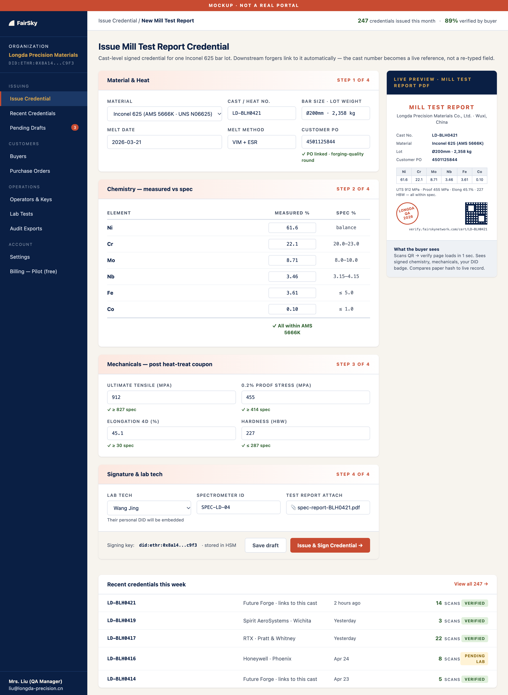
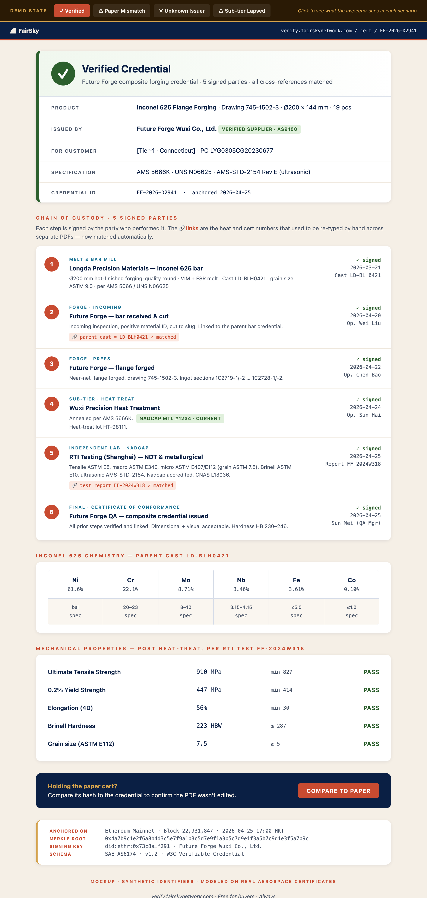
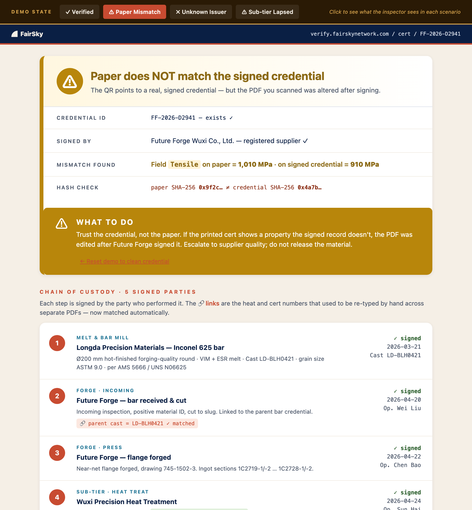

You don't need to know anything about aerospace or blockchain. By the end of this page you'll understand the problem, see the product working in real screenshots, and know why people pay for it.
This isn't hypothetical. Two recent cases made global headlines:
Every big Western aircraft maker has since put their Chinese suppliers under a microscope. Honest Chinese factories — who make most of the world's aerospace metal — now have a trust problem they can't fix with paper. That's the opening.
Nothing changes in the factory's day. Their quality manager types the same test numbers they type today — then clicks one button. A tamper-proof, digitally signed certificate is created, and a normal-looking PDF comes out with a QR code added.

When the metal arrives at the customer's dock, an inspector points their phone at the QR code. In about eight seconds they see the entire life story of that metal — every company that touched it, every test, all cryptographically signed. No app. No login. Free.

Here's the thing we learned from looking at real aerospace paperwork. A single melt of metal gets a batch number — say BLH0421. As that metal moves from the mill, to the forge, to the customer, a human being literally re-types that same number onto each company's separate PDF. That hand-typed number is the only thing linking the documents together.
A worker copies BLH0421 from the mill's cert onto the forge's cert onto the customer's cert.
If someone fakes one document and types a real-looking number, nobody notices for years — until an airplane part fails.
That number becomes a live link. The forge's credential automatically reaches back and checks the mill's credential.
If the link doesn't match a real, signed record, it fails instantly — right there on the screen the inspector is holding.
We didn't invent the chain of custody. We just made the paperclip un-fakeable.
If a certificate is altered after signing, the page tells the inspector exactly what's wrong — which number was changed, and by how much — before the metal ever enters production.

There are three ways it fails loudly: the paper was edited after signing (above), the QR is a fake pointing to nothing, or a sub-supplier's certification had expired. You can click through all of them in the live demo.
The sharpest question we get — usually from a quality engineer. If a fraudster takes a real certificate and ships different metal under it, no digital system alone can catch that. Here's what changes anyway — and how the gap gets closed:
We don't claim to stop every fraud. We make fraud attributable, detectable, and expensive — a crime with a name attached, instead of a business model.
Scroll to the bottom and click "Compare to Paper." Watch it catch a forgery in real time.
Open the live demo See the factory's screenEverything is a working mockup with synthetic data modeled on real aerospace certificates. Nothing to install.
The factory pays. Not the customer. The factory is the one who needs to prove it's trustworthy to win and keep Western orders — so it subscribes. The customer verifies for free, forever, which is what makes the whole thing spread.
Our software is open source — which sounds backwards until you see the split:
The code is free. Being the trusted referee is the business.
Same model as Red Hat (sold for $34B), MongoDB, and Sentry. Open code builds trust; the hosted, branded, verified service is what people pay for.
We're spending 90 days and a small amount of our own money to answer one question: will Western buyers actually demand this, and will factories pay for it? We talk to 15 of each before we build in earnest.
The ask: if you know a quality or supply-chain leader at a Western aerospace company, a 30-minute introduction is worth more to us than money right now. And if this space interests you, we'd love to keep you close as we hit milestones.